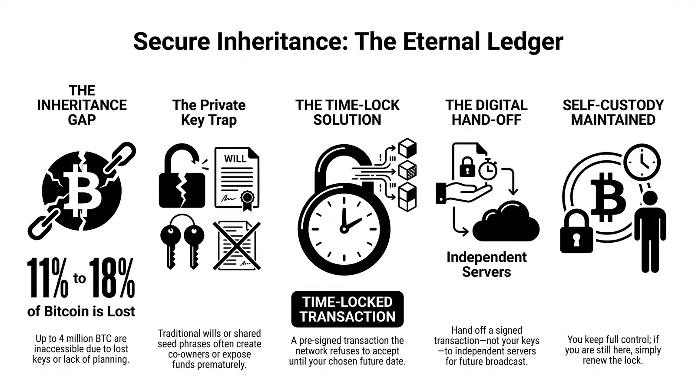

Self-custody is the whole point of Bitcoin. It is also, quietly, the reason a great deal of it will never move again.
You hold your own keys. Nobody can freeze your coins, seize them, or spend them without your permission. But that same guarantee cuts both ways: if you disappear tomorrow — an accident, an illness, or simply a hard drive that dies at the wrong moment — nobody can help your family either. Not a bank. Not a court. Not the developers of your wallet. Bitcoin does exactly what it promised: it obeys the keys, and only the keys.
Most people who hold Bitcoin know this in the abstract. Very few have done anything about it.
The scale of the problem
Nobody can count lost coins precisely — the blockchain does not flag them — but analysts converge on a striking range. Estimates from Chainalysis and others put the number of permanently inaccessible bitcoin somewhere between 2.3 and 4 million BTC, roughly 11 to 18 percent of the 21 million cap.1 Some of that is early mining rewards nobody ever claimed. Some is a discarded laptop, a forgotten password, a paper wallet that went through the wash.
And a meaningful share is a simpler story: someone died, and no one else knew where the keys were, or how to use them.
Every one of those coins is still visible on-chain. You can look them up. They will sit there forever, doing nothing, because a private key that nobody holds is indistinguishable from a private key that never existed.
Why "just leave instructions" doesn't work
The natural response is: I'll write it down. Put the seed phrase in an envelope, tell your partner where it is, add a line to your will. Problem solved.
It isn't, and it helps to be honest about why. The usual approaches to Bitcoin inheritance all quietly break the thing they are trying to protect:
- Give your seed phrase to a family member. Now two people can move your coins — today, not after you're gone. You have not created a backup; you have created a co-owner, and one who may not understand what they are holding.
- Hand the coins to a custodian. A trusted third party will hold them and release them to your heirs. That is a perfectly valid choice — but it is no longer self-custody. You are back to trusting an institution to still exist, still be solvent, and still be willing when the time comes.
- Write it into a legal will. Executors and lawyers are excellent at transferring houses and bank accounts. Most of them have never restored a wallet from a seed phrase, and a will is a public document that will eventually name exactly where the funds are.
- Do nothing and hope. Statistically the most common option — and the one those 2.3 to 4 million coins came from.
Each of these trades one risk for another. None of them lets you keep full control today while guaranteeing your heirs receive the coins tomorrow.
What Bitcoin itself allows
Here is the part that is easy to miss: the Bitcoin protocol already contains the tool for this. It is called a time-locked transaction.
You can sign a transaction now that Bitcoin will refuse to accept until a date you choose. Until that date, the network's own consensus rules reject it — no one can broadcast it early, not even you. After that date, anyone holding the signed transaction can send it to the network, and it will confirm.
That single primitive changes the shape of the problem. You no longer need to give anyone your keys. You need to give someone a pre-signed transaction that only becomes valid in the future — and make sure at least one of them is still around to broadcast it when the time comes.
Which raises the obvious question: who?
Where Bitcoin After Life comes in
Bitcoin After Life (BAL) is an open-source plugin for Electrum that turns that primitive into something a normal person can actually use. You choose your heirs and a delivery date. The plugin builds the time-locked transaction, Electrum signs it locally — your keys never leave your device — and the signed transaction is handed to a network of independent Will-Executor servers whose only job is to broadcast it on the date you set.
They cannot spend it. They cannot alter it. They cannot broadcast it early, because Bitcoin won't let them. And because the same transaction is held by several of them, no single server needs to survive for your plan to work — only one has to.
If you are still here when the date approaches, you simply renew. If you are not, your coins go where you said they should — with no notary, no custodian, and no one ever holding your keys but you.
Self-custody was never meant to end with you. Bitcoin already has the tools to make sure it doesn't. Read how the protocol works — and what a Will-Executor can and cannot see — in the manual: bitcoin-after.life/docs
1 Ranges vary by methodology and year; the 2.3–4 million BTC figure reflects estimates cited by Chainalysis, Ledger, and River Financial. The exact number is unknowable, and that uncertainty is part of the point.